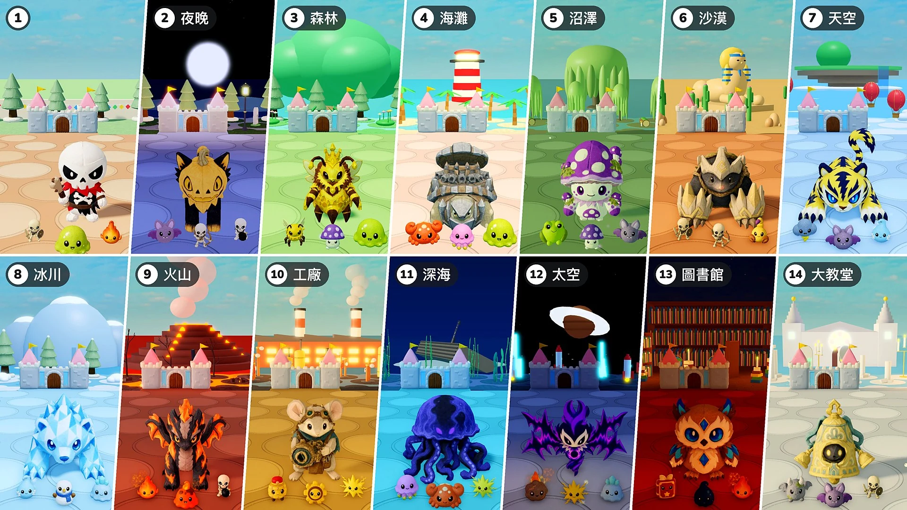

動態

更新說明MonChexx 更新說明：關卡 · 2倍速 · 召喚物更新說明MonChexx 更新說明：道具抽取 · 特殊抽取 · 首領登場 · 分數更新說明MonChexx 更新說明：自動下一輪 · 首領增加 · 首領生命值條 · 分數 · 火焰旗更新說明MonChexx 更新說明：法力之泉 · 跳躍撿星星 · 深淵水母定位調整更新說明MonChexx 更新說明：道具掉落與等級 · 墓碑 · 瀾龍調整更新說明MonChexx 更新說明：定位調整與定位特性內容更新第2賽季 · 新模式：守護城堡更新說明MonChexx 更新說明：技能的攻擊判定更新說明MonChexx 更新說明：攻擊判定 · 技能強度更新說明MonChexx 更新說明：大廳 · 圖鑑更新說明MonChexx 更新說明：滴答齒輪重製 · 架勢表現更新說明MonChexx 更新說明：石甲龜調整 · 便利性優化 · 問題修復更新說明MonChexx 更新說明：5款娃娃調整更新說明MonChexx Patch Notes: Battle Tempo & Skills 內容更新第1賽季 · 更新02：進化浪潮更新說明MonChexx 更新說明：平衡調整 · 戰鬥系統
內容更新第1賽季 · 更新02：進化浪潮更新說明MonChexx 更新說明：平衡調整 · 戰鬥系統